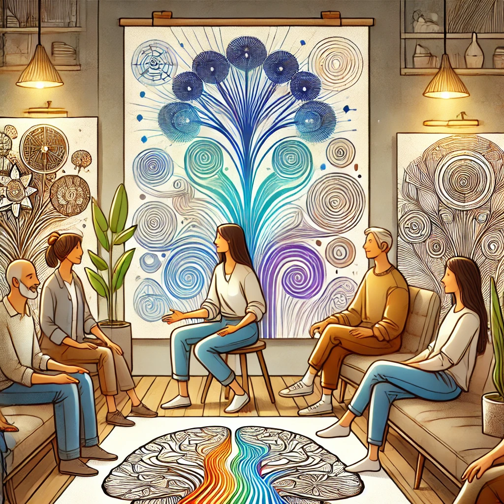

Нейрографика как метод саморазвития и арт-терапии вдохновляет многих людей
на путь самопознания и внутренней гармонии. Этот метод привлекает людей разных профессий:
психологов, художников, коучей и даже тех, кто раньше никогда не занимался искусством. В этой
статье мы собрали несколько историй и интервью с практикующими нейрографику, которые делятся
своим опытом и рассказывают, как нейрографика изменила их жизнь.
История Анны, психолога и нейрографического коуча
Анна — психолог с более чем десятилетним опытом работы. Она узнала о нейрографике около двух
лет назад и с тех пор использует её как часть своих консультаций.
Вот что она рассказывает:
Анна: «Когда я начала изучать нейрографику, меня поразило, насколько мощным может быть этот
метод. Мои клиенты, которые раньше испытывали трудности с выражением своих чувств, стали
более открытыми. Мы буквально "рисуем" наши переживания и страхи, что помогает им легче
справляться с внутренними конфликтами. Нейрографика оказалась простым и эффективным
инструментом для работы с эмоциями».
Интервью с Максимом, руководителем отдела по работе с клиентами
Максим работает в крупной компании и управляет командой из десяти человек. На одном из
корпоративных тренингов он познакомился с нейрографикой и теперь применяет её в работе.
Максим: «Вначале я относился к этому скептически, но, попробовав
сам, понял, что нейрографика помогает мне справляться со стрессом. Это отличная техника для
тех, кто, как и я, работает в условиях постоянного напряжения. Я также предложил своим
коллегам попробовать нейрографику, и многие заметили, что стали лучше справляться с
нагрузкой и концентрироваться на задачах».
История Марии, мамы двоих детей
Мария — мама двоих детей, и нейрографика стала для неё не только увлечением, но и способом
обучать своих детей эмоциональному самоконтролю.
Мария: «Я начала заниматься нейрографикой сама, но потом заметила,
что и дети заинтересовались моими рисунками. Теперь мы делаем это вместе. Это стало нашим
семейным ритуалом: рисуем линии, закругляем углы, обсуждаем эмоции. Дети научились лучше
понимать свои чувства, и я вижу, как они становятся спокойнее и увереннее в себе».
Интервью с Евгением, начинающим художником
Евгений — молодой художник, который искал новые способы выражения своих идей. Нейрографика
дала ему вдохновение для новых проектов.
Евгений: «Я никогда не думал, что нейрографика так увлечёт меня.
В процессе рисования я чувствую, как возникают новые идеи, открываются внутренние образы.
Это похоже на медитацию, но в творческом ключе. Сейчас я работаю над серией картин,
вдохновлённых нейрографикой, и планирую провести выставку. Это не только искусство, но
и способ исследования себя».
История Софии, учителя начальной школы
София — учитель младших классов, которая внедрила нейрографику в свою работу с детьми.
София: «Я начала использовать нейрографику с моими учениками,
чтобы помочь им выражать свои чувства и лучше концентрироваться. Это превратилось в
интересную практику: дети рисуют линии, круги, закругляют углы, и потом мы обсуждаем,
что они чувствовали во время рисования. Я заметила, что у учеников улучшилось внимание и
повысился интерес к занятиям».
Заключение
Каждый из этих практикующих делится уникальной историей, показывая, как нейрографика помогает
в разных сферах жизни. Этот метод оказался универсальным инструментом, который можно
использовать как для самопознания, так и для работы с другими людьми. Нейрографика даёт
возможность каждому погрузиться в творческий процесс, независимо от уровня подготовки или
опыта.